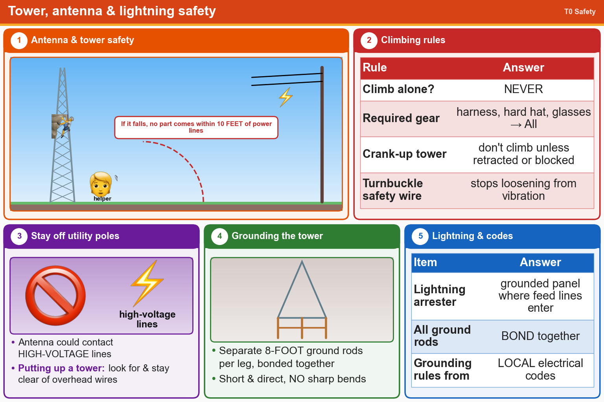

💡 Never climb alone. Stay 10 feet from power lines even if the antenna falls. Short, direct ground wires with no sharp bends.
Press Check on any question to see if you're right (it won't show the answer), or Grade at the bottom to grade the whole page.
T0B03
Under what circumstances is it safe to climb a tower without a helper or observer?
✘A.When no electrical work is being performed
✔B.Never
✘C.When the work being done is not more than 20 feet above the ground
✘D.When no mechanical work is being performed
T0B02
What is required when climbing an antenna tower?
✘A.Have sufficient training on safe tower climbing techniques
✘B.Use appropriate tie-off to the tower at all times
✘C.Always wear an approved climbing harness
✔D.All these choices are correct
T0B07
Which of the following is an important safety rule to remember when using a crank-up tower?
✘A.This type of tower must never be painted
✘B.This type of tower must never be grounded
✔C.This type of tower must not be climbed unless it is retracted, or mechanical safety locking devices have been installed
✘D.All these choices are correct
T0B05
What is the purpose of a safety wire through a turnbuckle used to tension guy lines?
✘A.Provide a ground path for lightning strikes
✘B.Provide an ability to measure for proper tensioning
✘C.Secure the guy line if the turnbuckle breaks
✔D.Prevent loosening of the turnbuckle from vibration
T0B04
Which of the following is an important safety precaution to observe when putting up an antenna tower?
✘A.Insulate the base of the tower to avoid lightning strikes
✘B.Wear a ground strap connected to your wrist at all times
✔C.Look for and stay clear of any overhead electrical wires
✘D.All these choices are correct
T0B06
What is the minimum safe distance from a power line to allow when installing an antenna?
✔A.Enough so that if the antenna falls, no part of it can come within 10 feet of the power wires
✘B.1/2 wavelength at the operating frequency
✘C.The height of the power line above ground
✘D.Add the height of the antenna to the height of the power line and multiply by a factor of 1.5
T0B09
Why should you avoid attaching an antenna to a utility pole?
✔A.The antenna could contact high-voltage power lines
✘B.The antenna may unbalance the power transformer, causing power fluctuations
✘C.The antenna will not work properly because of induced voltages
✘D.All these choices are correct
T0B01
Which of the following is good practice when installing ground wires on a tower for lightning protection?
✔A.Ensure that connections are short and direct
✘B.Make sure all ground wire bends are right angles
✘C.Put a drip loop in the ground connection to prevent water damage to the ground system
✘D.All these choices are correct
T0B08
Which is a proper grounding method for a tower?
✘A.A ferrite-core RF choke connected between the tower and ground
✔B.Separate eight-foot ground rods for each tower leg, bonded to the tower and each other
✘C.A connection between the tower base and a cold-water pipe
✘D.A single four-foot ground rod, driven into the ground no more than 12 inches from the base
T0B10
Which of the following is true when installing grounding conductors used for lightning protection?
✘A.Wires must be carefully routed with precise right-angle bends
✘B.Common grounds must be avoided
✔C.Sharp bends must be avoided
✘D.Use only non-insulated wire
T0A07
Where should a lightning arrester be installed in a coaxial feed line?
✘A.At the antenna feed point
✘B.At the AC power service panel
✔C.On a grounded panel near where feed lines enter the building
✘D.At the output connector of a transceiver
T0A09
What should be done to all external ground rods or earth connections?
✘A.Keep them as far apart as possible
✘B.Waterproof them with silicone caulk or electrical tape
✘C.Tune them for resonance on the lowest frequency of operation
✔D.Bond them together with heavy wire or conductive strap
T0B11
Which of the following establishes grounding requirements for an amateur radio tower or antenna?
✔A.Local electrical codes
✘B.FCC Part 97 rules
✘C.UL recommended practices
✘D.FAA tower lighting regulations